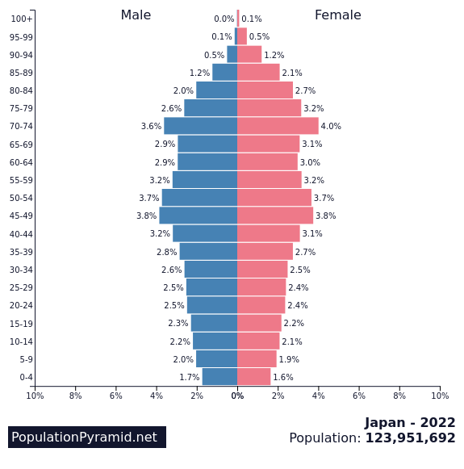

Japan
Data
Bevolking: Volgens schattingen van de Verenigde Naties had Japan in
juli 2021 een bevolking van ongeveer 126,3 miljoen mensen.

Oppervlakte: Japan heeft een totale oppervlakte van ongeveer 377.975
vierkante kilometer, waardoor het de 62e grootste natie ter wereld is.
Bevolkingsdichtheid: Vanwege de relatief kleine landmassa en grote
bevolking heeft Japan een hoge bevolkingsdichtheid. De gemiddelde
bevolkingsdichtheid wordt geschat op ongeveer 334 inwoners per vierkante
kilometer.
Grootste steden: Enkele van de grootste steden in Japan zijn Tokio (de
hoofdstad) met een bevolking van meer dan 14 miljoen mensen, Yokohama,
Osaka, Nagoya en Sapporo.
Vergrijzing: Japan staat bekend om zijn vergrijzende bevolking.
Volgens gegevens van het Japanse ministerie van Binnenlandse Zaken en
Communicatie was ongeveer 28,7% van de bevolking in september 2021 65
jaar of ouder.
Levensverwachting: Japan heeft een hoge levensverwachting. Volgens
gegevens van de Wereldgezondheidsorganisatie (WHO) bedroeg de gemiddelde
levensverwachting bij de geboorte in Japan in 2020 ongeveer 84,6 jaar.
Officiële taal: De officiële taal van Japan is Japans. Het Japans
heeft zijn eigen unieke schriftsysteem dat bestaat uit kanji (Chinese
karakters), hiragana en katakana (fonetische scripts).
Religie: Het shintoïsme en het boeddhisme zijn de twee belangrijkste
religies in Japan. Veel Japanners praktiseren een combinatie van beide
religies.